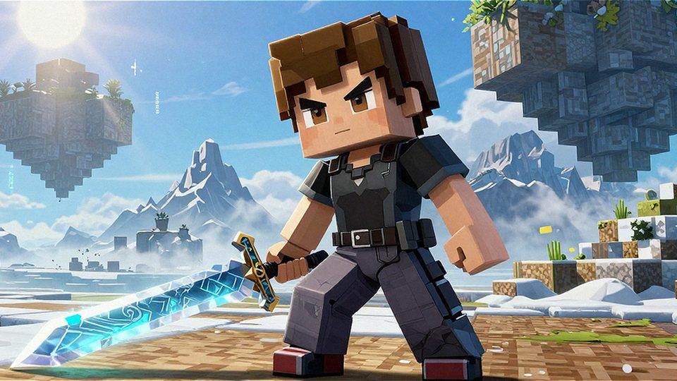
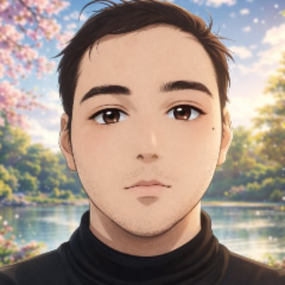
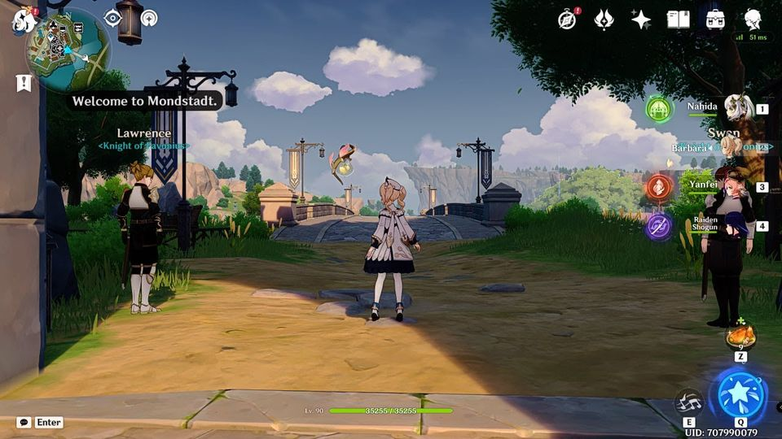
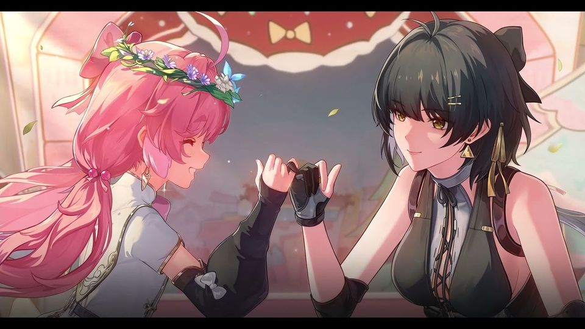
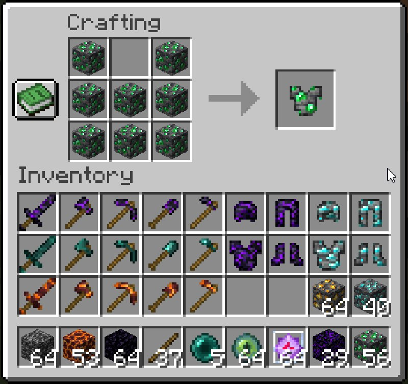
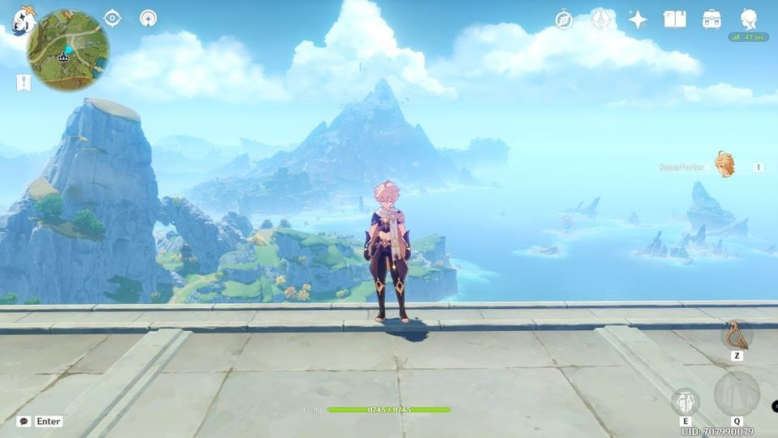

Blocks
Build, break, repeat
Survival worlds, Ars Nouveau glitches, and a banner made of diamond blocks.
Watch the channelWelcome to the night
Genshin Impact, Wuthering Waves, Minecraft, and the hours between.
Italian otaku, gamer, and Minecraft modder from Cosenza. This is the quiet corner of the internet where the night shift begins: gacha pulls, blocky builds, lyre covers, and the occasional Twitch stream.
Twitch
Player and chat straight from Twitch, loaded only when you ask. No autoplay, no fake status. If the screen is dark, the night is quiet.
Player hidden. Open on Twitch, or use the arrow to show it again.

Load the Twitch player and chat only when you want them. Twitch may set its own cookies and will show the real offline state.
No autoplay. No fake live badge. Just the channel when you ask.
If the player shows offline, the night is quiet. Follow to catch the next one.
Open on TwitchAbout
Cosenza, Italy · Genshin since 2020 · Minecraft modder
“I’m SuperFurias: an otaku, a gamer, and a creature of the after-hours.”
Based in Cosenza, Italy, SuperFurias is a NEET who has been wandering Teyvat since October 2020. Genshin Impact, Wuthering Waves, and Minecraft make up the permanent rotation; everything else is a temporary obsession.
Outside the games, he builds things: BlendedCraft, a Fabric mod that turns any block into gear; stream overlays, audio tools, and the occasional AI experiment. If it can be tinkered with, it probably has been.
Anime and manga fill the rest of the night: hundreds of series behind him, a never-ending watchlist ahead, and a soft spot for stories that hurt in the right way.

Games & content
The games, builds, and side quests that keep the lights off.
Survival worlds, Ars Nouveau glitches, and a banner made of diamond blocks.
Watch the channel
Cape physics, stamina bugs, and the occasional lyre cover. A traveler’s log from Mondstadt onward.
Watch the video
Encore’s story, cutscene wallpapers, and the kind of quest that leaves a mark.
Visit the channel
A Fabric mod that blends any material into tools and armor, built from scratch, updated for 26.2.
View on CurseForge
Genshin lyre covers, from Ruu’s Song to the Fairy Tail theme.
Listen on YouTubeCommunity
Chat is the campfire. Whether it’s a boss fight, a build, or a quiet lyre cover, keep it kind, keep it curious, and keep the spoilers behind a warning.
No harassment, no dogpiling, no edge-lord auditions.
New quest, new chapter, new ending: warn first.
Hints only when asked. The blind run stays blind.
No self-promo or links without permission.
No doxxing, no personal info, no exceptions.